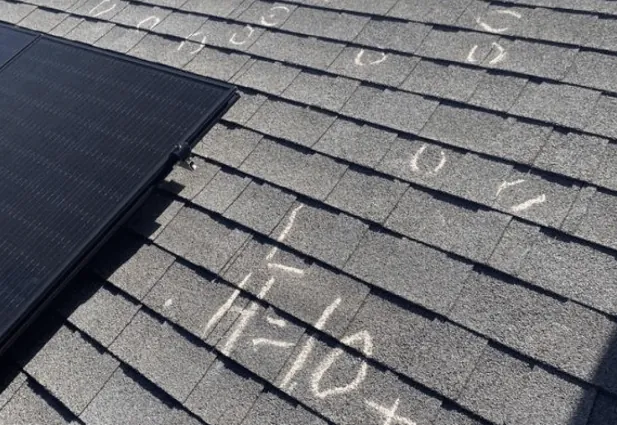
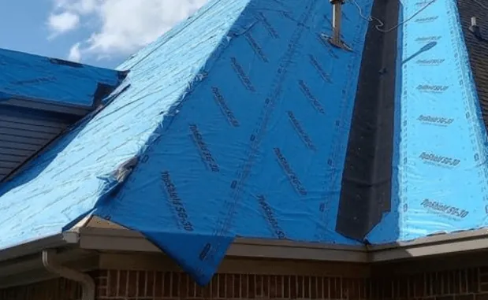
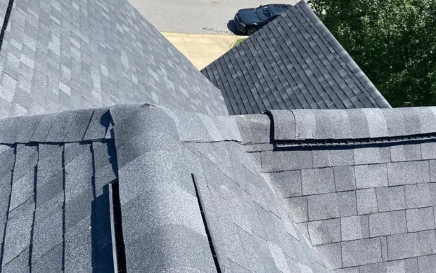

Your roof is a critical part of your property. It shields you from the elements, contributes to energy efficiency, and enhances your home’s aesthetic appeal.
But like any other part of your home, it requires regular maintenance. This is where a free roof inspection comes into play.
A free roof inspection by a professional roofing company can help identify potential issues early. This early detection can save you from expensive repairs or even a full roof replacement.
In this article, we’ll delve into the benefits of a free roof inspection. We’ll discuss how it can help extend your roof’s lifespan, maintain its integrity, and save you money.
So, let’s get started and explore how this simple step can lead to significant long-term benefits.
Why a Free Roof Inspection is Essential
A free roof inspection is more than a cursory look at your roof. It’s a thorough assessment conducted by experienced roofing contractors. These professionals have the expertise to spot potential problems that may not be visible to the untrained eye.
The primary goal of a roof inspection is to identify minor issues before they escalate into major problems. This could include anything from missing or damaged shingles to signs of water damage such as leaks or rot.
Here are some key reasons why a free roof inspection is essential:
- Early detection of roof damage can prevent costly repairs or replacements.
- Regular roof maintenance, including inspections, can extend the lifespan of your roof.
- Inspections can uncover hidden damage caused by weather, animals, or debris.
- A free roof inspection can provide peace of mind to property owners.
- Roofing companies often offer free inspections as part of their customer service.
In essence, a free roof inspection is a proactive measure in maintaining the health of your roof. It’s a small step that can lead to significant savings and peace of mind in the long run.
What to Expect During a Free Roof Inspection

When you schedule a free roof inspection, you can expect a thorough examination of your roof’s condition. The roofing contractor will check for visible signs of damage and wear. This includes inspecting for storm damage and checking the shingles, gutters, flashing, and ventilation systems.
The inspection isn’t limited to the roof’s surface. The contractor will also assess the condition of the underlying structures. This helps to identify any hidden issues that could lead to significant problems down the line.
The Inspection Process
The inspection process begins with a visual assessment of the roof’s overall condition. The contractor will look for any obvious signs of damage or wear. This includes checking for missing or damaged shingles, signs of water damage, and the condition of the gutters and flashing.
Next, the contractor will inspect the roof’s underlying structures. This involves checking the attic for signs of leaks, proper insulation, and adequate ventilation. The contractor may also use specialized equipment or drones to inspect hard-to-reach areas.
Finally, the contractor will provide a detailed report on the roof’s condition. This report will include any identified issues, recommended repairs, and an estimate for the cost of these repairs.
Common Issues Uncovered During Inspections
During a roof inspection, the contractor will be on the lookout for a variety of potential issues. These could include:
- Missing or damaged shingles
- Signs of water damage, such as leaks or rot
- Damage to the gutters or flashing
- Poor ventilation or insulation in the attic
- Signs of pest infestation or damage caused by animals
These are just a few examples of the issues that can be uncovered during a free roof inspection. By identifying these problems early, you can address them before they lead to more significant damage and costlier repairs.
The Financial Benefits of Early Detection
One of the main benefits of a free roof inspection is the potential for significant cost savings. By catching issues early, you can often address them before they become major problems. This can save you from paying for extensive repairs or a full roof replacement.
For example, a small leak may not seem like a big deal at first. However, if left untreated, it can lead to water damage, mold growth, and structural issues. These problems can be expensive to fix and may even require you to replace your entire roof.
On the other hand, if this leak is detected during a free roof inspection, you can have it repaired before it causes any further damage. This can save you a significant amount of money in the long run. Plus, it can prevent the stress and inconvenience of dealing with a major roof issue.
Saving on Repairs

The cost of roof repairs can add up quickly. Even minor issues can be expensive to fix, especially if they’ve been left untreated for a while. That’s why it’s so important to catch these problems early through regular roof inspections.
By identifying and addressing issues early, you can often prevent them from becoming more serious. This can save you from having to pay for expensive repairs. Plus, it can help maintain the integrity of your roof, preventing further damage.
In short, a free roof inspection can be a cost-effective way to keep your roof in good condition. It can help you avoid unexpected repair costs and ensure that your roof continues to protect your home effectively.
Extending Your Roof’s Lifespan
Regular roof inspections can also help to extend the lifespan of your roof. By identifying and addressing issues early, you can prevent damage that could shorten your roof’s life. This can save you from replacing your roof prematurely, which can be a significant expense.
For example, poor ventilation can cause your roof to age more quickly. However, if these issues are identified during a free roof inspection, they can be addressed before they cause significant damage. This can help prolong your roof’s life, saving you money in the long run.
Choosing the Right Roofing Company for Your Free Inspection
When it comes to getting a free roof inspection, it’s important to choose the right roofing company. Not all companies offer the same level of service, so it’s worth taking the time to find a reputable contractor.
Look for a company that has a good reputation in your community. Check online reviews and ask for recommendations from friends or family. It’s also a good idea to choose a company that specializes in the type of roofing you have, whether residential or commercial.
Finally, make sure the company you choose offers a free, no-obligation roof inspection. This shows that they’re confident in their work and are willing to prove their value upfront.
What Sets a Reputable Roofing Contractor Apart
A reputable roofing contractor stands out in several ways. First, they have the necessary licenses and insurance to operate in your area. This protects you in case of any accidents or damage during the inspection.
Second, a reputable contractor has experienced and trained professionals on their team. They know what to look for during an inspection and can provide accurate and detailed reports. This expertise is crucial in identifying potential issues and providing effective solutions.
After the Inspection: Understanding Your Free Estimate

Once the inspection is complete, the roofing company should provide you with a free estimate. This document details the condition of your roof and any necessary repairs or replacements. It’s important to understand this estimate to make informed decisions about your roof.
The estimate should list the identified issues, the recommended solutions, and the associated costs. If anything is unclear, don’t hesitate to ask the contractor for clarification. Remember, this is your roof, and you have the right to understand every aspect of its care.
Also, consider getting estimates from multiple companies. This can give you a better idea of the fair market price for the services you need.
Making an Informed Decision on Roof Repair or Replacement
The decision between roof repair and replacement can be a tough one. It often comes down to the extent of the damage and the age of your roof. A good rule of thumb is that if the repair costs are close to or exceed the cost of a new roof, replacement might be the better option.
However, every situation is unique. That’s why it’s important to trust the advice of your roofing contractor. They have the expertise to guide you towards the best decision for your specific circumstances.
The goal is to ensure the longevity and integrity of your roof. Whether that means repair or replacement, a free roof inspection is the first step in making that informed decision.
Conclusion: The Long-Term Value of a Free Roof Inspection
A free roof inspection offers invaluable benefits. It’s a proactive measure that can save you money, extend the lifespan of your roof, and provide peace of mind.
Don’t underestimate the value of this service. Schedule your free roof inspection today and invest in the long-term health of your property.
For a free roof inspection or other residential and commercial roofing services in Arkansas, contact EZ Roofing now.